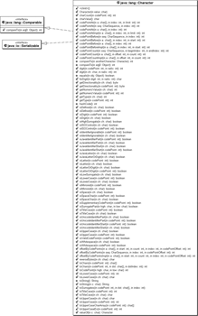

4.2 Die Character-Klasse
Die im Kernpaket java.lang angesiedelte Klasse Character bietet eine große Anzahl statischer Methoden, die im Umgang mit einzelnen Zeichen interessant sind. Dazu gehören Methoden zum Testen, etwa ob ein Zeichen eine Ziffer, ein Buchstabe oder ein Sonderzeichen ist.
4.2.1 Ist das so?
Allen Testmethoden ist gemeinsam, dass sie mit der Vorsilbe is beginnen und ein boolean liefern. Dazu gesellen sich Methoden zum Konvertieren, etwa in Groß-/Kleinschreibung.
Ein paar Beispiele:
| Ausdruck | Ergebnis |
| Character.isDigit( '0' ) | true |
| Character.isDigit( '-' ) | false |
| Character.isLetter( 'ß' ) | true |
| Character.isLetter( '0' ) | false |
| Character.isWhitespace( ' ' ) | true |
| Character.isWhitespace( '-' ) | false |
Alle diese Methoden »wissen« über die Eigenschaften der einzelnen Unicode-Zeichen Bescheid. Und 0 bleibt ja immer eine Null, egal ob das Programm in Deutschland oder in der Mongolei ausgeführt wird, denn der Codepoint jedes Unicode-Zeichens ist immer der gleiche.
Testen, ob eine Zeichenkette nur aus Ziffern besteht
Im folgenden Beispiel wollen wir die Methode deklarieren, die einen String abläuft und testet, ob der String nur aus Ziffern besteht. Obwohl so eine Funktionalität in der Praxis nützlich ist, bietet Java SE dafür keine simple Methode.
Listing 4.1: IsNumeric.java
public class IsNumeric
{
/**
* Returns {@code true} if the String contains only Unicode digits.
* An empty string or {@code null} leads to {@code false}.
*
* @param string Input String.
* @return {@code true} if string is numeric, {@code false} otherwise.
*/
public static boolean isNumeric( String string )
{
if ( string == null || string.length() == 0 )
return false;
for ( int i = 0; i < string.length(); i++ )
if ( ! Character.isDigit( string.charAt( i ) ) )
return false;
return true;
}
public static void main( String[] args )
{
System.out.println( isNumeric( "1234" ) ); // true
System.out.println( isNumeric( "12.4" ) ); // false
System.out.println( isNumeric( "-123" ) ); // false
}
}
Es ist so definiert, dass null und ein leerer String nicht als numerisch angesehen werden, allerdings lässt sich auch definieren, dass null zu einer Ausnahme führen soll und der leere String durchaus numerisch ist. Konventionen wie diese liegen beim Autor der Bibliothek, und unterschiedliche Utility-Bibliotheken mit solchen Hilfsfunktionen haben dort unterschiedliche Vorstellungen.
Das Beispiel nutzt zwei String-Methoden: length() liefert die Länge eines Strings, und charAt() liefert das Zeichen an der gewünschten Stelle. Eine Schleife iteriert über den String und testet jedes Zeichen mit isDigit(); ist ein Zeichen keine Ziffer, verlässt return false automatisch die Schleife. Läuft die Schleife erfolgreich durch, kann ein return true vermelden, dass jedes Zeichen eine Ziffer war.
Die wichtigsten isXXX()-Methoden im Überblick
final class java.lang.Character |
- static boolean isDigit(char ch)
Handelt es sich um eine Ziffer zwischen 0 und 9? - static boolean isLetter(char ch)
Handelt es sich um einen Buchstaben? - static boolean isLetterOrDigit(char ch)
Handelt es sich um ein alphanumerisches Zeichen? - static boolean isLowerCase(char ch)
- boolean isUpperCase(char ch)
Ist es ein Klein- oder ein Großbuchstabe? - static boolean isWhiteSpace(char ch)
Ist es ein Leerzeichen, Zeilenvorschub, Return oder Tabulator, also ein sogenannter Weißraum[114]() (engl. white space), auch Leerraum genannt? - static boolean isJavaIdentifierStart(char ch)
Ist es ein Java-Buchstabe, mit dem Bezeichner beginnen dürfen? - static boolean isJavaIdentifierPart(char ch)
Ist es ein Java-Buchstabe oder eine Ziffer, der beziehungsweise die in der Mitte eines Bezeichners vorkommen darf? - static boolean isTitleCase(char ch)
Sind es spezielle Zwei-Buchstaben-Paare mit gemischter Groß- und Kleinschreibung? Dies kommt etwa im Spanischen vor, wo »lj« für einen einzigen Buchstaben steht. In Überschriften erscheint dieses Paar als »Lj« und wird von dieser Methode als Sonderfall erkannt. Unter http://www.unicode.org/reports/tr21/tr21-5.html schreibt der Unicode-Standard die Konvertierung vor.
4.2.2 Zeichen in Großbuchstaben/Kleinbuchstaben konvertieren
Zum Konvertieren eines Zeichens in Groß-/Kleinbuchstaben deklariert die Character Klasse die Methoden toUpperCase() und toLowerCase(). Die testenden isXXX()-Methoden finden oft Anwendung beim Ablaufen einer Zeichenkette.
Unser nächstes Beispiel fragt den Benutzer nach einem String. Gültige Buchstaben sollen in Großbuchstaben konvertiert werden, und jeder Weißraum soll durch einen Unterstrich ersetzt werden. Zum Ablaufen der Eingabe nutzen wir wieder die schon bekannten String-Methoden length() und charAt():
Listing 4.2: UppercaseWriter.java
public class UppercaseWriter
{
public static void main( String[] args )
{
String input = new java.util.Scanner( System.in ).nextLine();
for ( int i = 0; i < input.length(); i++ )
{
char c = input.charAt( i );
if ( Character.isWhitespace( c ) )
System.out.print( '_' );
else if ( Character.isLetter( c ) )
System.out.print( Character.toUpperCase( c ) );
}
}
}
Wenn die Eingabe etwa »honiara brotherhood guesthouse1« ist, ist die Ausgabe »HONIARA_BROTHERHOOD_GUESTHOUSE«. Die »1« verschwindet, weil sie weder ein Leerzeichen noch ein Buchstabe ist.
final class java.lang.Character |
- static char toUpperCase(char ch)
- static char toLowerCase(char ch)
Die statischen Methoden toUpperCase() und toLowerCase() liefern den passenden Groß- beziehungsweise Kleinbuchstaben zurück.
4.2.3 Ziffern einer Basis *
Die Character-Klasse besitzt ebenso eine Umwandlungsmethode für Ziffern bezüglich einer beliebigen Basis:
final class java.lang.Character |
- static int digit(char ch, int radix)
Liefert den numerischen Wert, den das Zeichen ch unter der Basis radix besitzt. Beispielsweise ist Character.digit('f', 16) gleich 15. Erlaubt ist jedes Zahlensystem mit einer Basis zwischen Character.MIN_RADIX (2) und Character.MAX_RADIX (36). Ist keine Umwandlung möglich, beträgt der Rückgabewert –1. - static char forDigit(int digit, int radix)
Konvertiert einen numerischen Wert in ein Zeichen. Beispielsweise ist Character.forDigit(6, 8) gleich »6« und Character.forDigit(12, 16) ist »c«.
Es ist bedauerlich, dass der Radix immer mit angegeben werden muss, obwohl er in der Regel immer 10 ist. Eine überladene statische Methode wäre hier angebracht.
| Beispiel |
|
Steht in einem Zeichen c zum Beispiel '3' und soll aus diesem die Ganzzahl 3 werden, so besteht die traditionelle Art darin, eine '0' abzuziehen. Die ASCII-Null '0' hat den char-Wert 48, '1' dann 49, bis '9' schließlich 57 erreicht. So ist logischerweise '3' – '0' = 51 – 48 = 3.) Die digit()-Methode ist dazu eine Alternative. Wir nutzen sie in einem kleinen Beispiel, um eine Zeichenkette mit Ziffern schließlich in eine Ganzzahl zu konvertieren. char[] chars = { '3', '4', '0' }; |

Abbildung 4.3: UML-Diagramm der umfangreichen Klasse Character
Ihr Kommentar
Wie hat Ihnen das <openbook> gefallen? Wir freuen uns immer über Ihre freundlichen und kritischen Rückmeldungen.
 Jetzt bestellen
Jetzt bestellen


{kind=link}